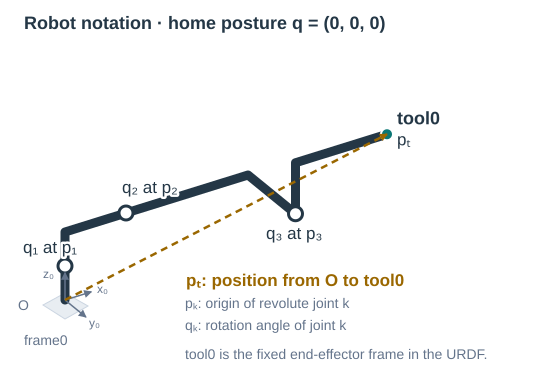
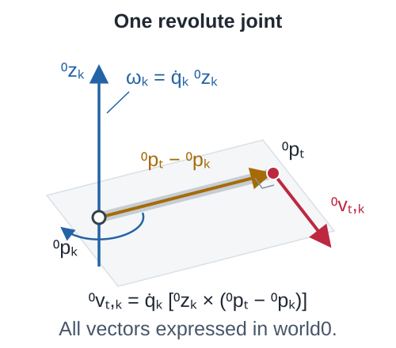
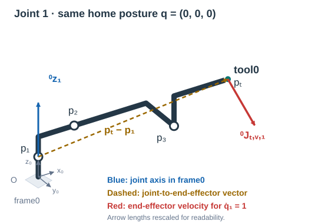
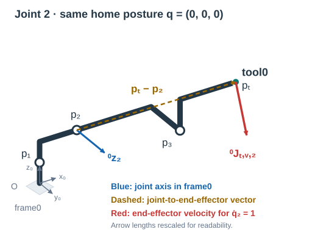
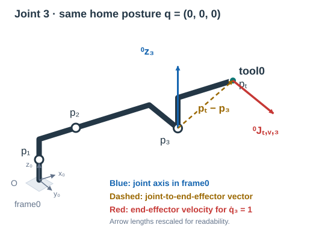
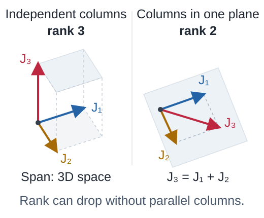
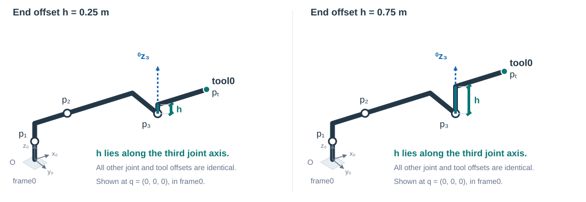
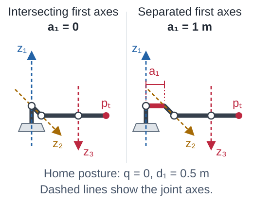

ENG-654 · Lecture 05
Robot Singularities
From poses to motions: the Jacobian, its determinant, and the paths a robot can follow
Running examples: a spatial 3R robot for end-effector position and the ABB IRB 4600 for full-pose singularities.
Notation refresher · Start with the robot
Joint angles describe the posture; a point describes the end effector

\(\mathbf q=[q_1,q_2,q_3]^T\): joint angles [rad]. Joint velocity \(\dot{\mathbf q}\) is their time derivative [rad/s].
tool0 is the end-effector frame specified in the URDF, fixed to the final link. Its origin is the point tracked here.
\({}^0\mathbf p_t\): position of that origin [m]. The subscript t identifies the end-effector point; the left superscript 0 means coordinates in the world frame.
\({}^0\mathbf p_k\): a point on joint k’s axis. \({}^0\mathbf z_k\): the unit direction of that axis, even when the URDF local axis is y.
End-effector linear velocity is \({}^0\dot{\mathbf p}_t\) [m/s]. A physical tool need not be attached.
From poses to motions
We know where the robot can be. How can it move?
Lectures 02–04 described poses and solved forward and inverse kinematics. Motion planning connects those poses through time.
So far: a configuration
Which end-effector position belongs to these joint angles?
Which joint configurations reach a given pose?
Now: a motion
Which joint velocities move the end effector along a desired path?
Can the robot maintain that motion at every point?
Position → differential → velocity
Velocity is the time derivative of position
The position Jacobian \({}^0J_{t,v}(\mathbf q)=\partial{}^0\mathbf p_t/\partial\mathbf q\) maps joint velocity to end-effector linear velocity. Here v identifies the translational rows.
A quick example · Planar 2R
Differentiate the two position equations
\(s_1=\sin q_1,\ c_1=\cos q_1,\ s_{12}=\sin(q_1+q_2),\ c_{12}=\cos(q_1+q_2)\).
The central object for robot motion
The Jacobian is at the heart of motion planning
Write \({}^0\mathbf J_{t,v,k}\) for column k of the position Jacobian. Each column contributes to the end-effector velocity: \(\dot{{}^0\mathbf p_t}={}^0\mathbf J_{t,v,1}\dot q_1+{}^0\mathbf J_{t,v,2}\dot q_2\).
Read the units before reading the numbers
A Jacobian entry converts one rate into another
| Task component | Revolute velocity [rad/s] | Prismatic velocity [m/s] |
|---|---|---|
| Linear velocity [m/s] | m/rad | m/m = 1 |
| Angular velocity [rad/s] | rad/rad = 1 | rad/m |
Planar 2R position task
Every entry of \({}^0J_{t,v}\) has units m/rad.
\(\det {}^0J_{t,v}\) has units m²/rad².
Full 6R pose task
Linear and angular rows have different units.
With radians treated as dimensionless, \(\det J\) has units m³.
One determinant value is decisive
At det J = 0, independent motion directions collapse
For \(l_1,l_2>0\)
\(q_2=0\) or \(\pi\pmod{2\pi}\) makes the links collinear.
The area spanned by the two columns is zero. The velocity ellipse becomes a line.
See the dependence at \(q_2=0\)
Both columns point along the same tangent: rank 1. Instantaneous radial end-effector motion is unavailable.
The intuitive construction · Geometric Jacobian
Each column is a familiar screw acting at the tool
World is frame 0. Write \({}^B\mathbf x_A\) for entity A expressed in frame B: the frame is a left superscript and the entity is a subscript.

World-frame screw, angular first
\({}^0\mathbf p_k\) is a point on joint k’s axis. The screw’s linear component \({}^0\mathbf v_k\) describes its velocity field at the world origin.
Evaluate that motion at the tool
This translational column is the end-effector velocity produced by unit joint velocity.
Act I · Read the course 3R model
Read the joint origins and axes from the URDF
Selected chain
base_link → link_1 → link_2 → link_3_d3 → tool0
The three joints are revolute. tool0 is the fixed end-effector frame, not a fourth movable joint.
| joint | origin in parent [m] | local axis |
|---|---|---|
| 1 | \((0,0,0.5)\) | \((0,0,1)\) |
| 2 | \((1,0,0.5)\) | \((0,1,0)\) |
| 3 | \((2,1.25,0)\) | \((0,0,1)\) |
| tool | \((1.5,0,0.75)\) | fixed |
Origins are relative to each parent link; all joint-origin rotations are zero. The sketch shows the resulting world positions at \(\mathbf q=\mathbf0\).
Act I · Build the position Jacobian
One axis and one lever arm give each column
URDF forward kinematics gives the end-effector position. Let \(L=2+1.5c_3\), \(B=1.25+1.5s_3\), where \(c_i=\cos q_i\), \(s_i=\sin q_i\).
For each joint, locate its axis point \({}^0\mathbf p_k\) and direction \({}^0\mathbf z_k\), then draw the lever arm to this common end-effector point. All vectors use world coordinates; lengths are metres.
Act I · Symbolic column 1
Joint 1 sweeps the mechanism around its base axis
The picture shows home posture; the equations apply at any \(\mathbf q\). Use \(c_i=\cos q_i\), \(s_i=\sin q_i\); lengths are metres.

Act I · Symbolic column 2
Joint 2 tilts every downstream point about its current axis
The picture shows home posture; the equations apply at any \(\mathbf q\). Use \(c_i=\cos q_i\), \(s_i=\sin q_i\); lengths are metres.

Act I · Symbolic column 3
Joint 3 moves the end effector through its final lever arm
The picture shows home posture; the equations apply at any \(\mathbf q\). Use \(c_i=\cos q_i\), \(s_i=\sin q_i\); lengths are metres.

Act I · Annotate the three columns
Read each axis, lever arm, and velocity directly on the robot
The course STL links follow custom_3R_new.urdf. Every \({}^0\mathbf z_k\), \({}^0\mathbf r_{t,k}={}^0\mathbf p_t-{}^0\mathbf p_k\), and \({}^0\mathbf J_{t,v,k}={}^0\mathbf z_k\times{}^0\mathbf r_{t,k}\) can be controlled independently.
Act I · Define singularity
At a singularity, the three columns are no longer all independent

The rank drops from 3 to 2 or lower. At rank 2, the columns span a plane; they need not all be parallel.
A nonzero joint velocity can give zero end-effector velocity
This is an instantaneous joint velocity in the Jacobian’s null space. If the rank is r, that null space has dimension 3 − r.
Act II · Compare the two course robots
An added end offset changes the lever arms
Same three joint origins and axes, same home posture. Only the fixed displacement to the end-effector point changes.

No added end offset
The baseline end frame has a fixed axial displacement \(h=0.25\) m from joint 3.
Added end offset: 0.50 m
The end frame now has \(h=0.75\) m. This is the robot used in the preceding column calculations.
Act II · Full position Jacobians of the two robots
The end offset appears in columns 1 and 2
Define \(L=2+1.5c_3\), \(B=1.25+1.5s_3\), with \(c_i=\cos q_i\), \(s_i=\sin q_i\). Coloured terms contain h; all lengths are metres.
Baseline end offset: \(h=0.25\) m
Added end offset: \(h=0.75\) m
Each full matrix comes from \(\partial{}^0\mathbf p_t/\partial\mathbf q\), equivalently the three axis–lever-arm cross products. Determinants follow from \(\mathbf J_1\cdot(\mathbf J_2\times\mathbf J_3)\), where \(\mathbf J_k\) denotes column k of the matrix shown.
Act II · Isolate the offset between the first two axes
Intersecting or separated axes give different singularity sets
For the next comparison and contour map, use a separate D–H family: \(a=(a_1,2,1.5)\) m, \(d=(d_1,1,0)\) m, \(\alpha=(\pi/2,\pi/2,0)\). Its end point is the origin after row 3.

No base offset: \(a_1=0\)
Two families: \(c_2=0\) or \(c_3-2s_3=0\).
Base offset: \(a_1=1\) m
The extra term couples q₂ and q₃. Setting \(c_2=0\) alone is no longer enough.
\(c_i=\cos q_i,\ s_i=\sin q_i\). The sketches use q = 0. The height d₁ translates the whole arm and does not affect the Jacobian. The complete matrices follow.
Act II · Full Jacobians of the base-offset comparison
Only column 1 acquires the base-offset contribution
For this D–H family, \(L=2+1.5c_3\), \(M=1+1.5s_3\), \(c_i=\cos q_i\), \(s_i=\sin q_i\). Each coloured term is the added a₁ contribution for a₁ = 1 m.
No base offset: a₁ = 0
Base offset: a₁ = 1 m
Expand along row 1 and collect terms. Since \(3c_3+4\ge1\), only the remaining factor can vanish.
Act II · Think in configuration space
A spatial robot has a singularity set, not one bad posture
Here \(\mathcal C\) is the space of joint configurations. With full periodic revolute coordinates, the \((q_2,q_3)\) domain is a torus and the same curves lift across \(q_1\). Mechanical joint limits clip that torus to a bounded feasible domain.
Act II · Read the zero set in configuration space
Trace det J = 0 across the joint-angle plane
Color shows the signed determinant. The explicit zero curves mark configurations where the 3R position task loses a motion direction.
Why the singularity equation does not depend on q₁
Periodic joint angles form a torus
Transition · From the course 3R to the ABB 6R
The task selects the velocity components we keep
Position task · three components
The 3R position Jacobian is 3 × 3. It contains only the translational rows.
Full pose task · six components
Here \({}^0\mathbf v_t={}^0\dot{\mathbf p}_t\). The 6R geometric Jacobian is 6 × 6 and also includes angular velocity \({}^0\boldsymbol\omega_t\).
Act III · Read one revolute joint geometrically
An axis and a lever arm determine the point velocity
For joint k, use the world axis \({}^0\mathbf z_k\), axis point \({}^0\mathbf p_k\), tool point \({}^0\mathbf p_t\), and lever arm \({}^0\mathbf r_{t,k}={}^0\mathbf p_t-{}^0\mathbf p_k\).
\({}^0\boldsymbol\omega_{t,k}=\dot q_k\,{}^0\mathbf z_k\)
\({}^0\mathbf v_{t,k}={}^0\boldsymbol\omega_{t,k}\times{}^0\mathbf r_{t,k}\)
\({}^0\mathbf v_{t,k}=\dot q_k\,{}^0\mathbf z_k\times({}^0\mathbf p_t-{}^0\mathbf p_k)\)
Act III · Fix the convention
This lecture stacks linear velocity above angular velocity
Apply the same permutation to all six-component vectors and transformations. The signed 6 × 6 determinant changes sign under the row swap; its zero set and rank remain unchanged.
Act III · Stack joint-generated motions
The Jacobian is a catalogue of instantaneous screws
Shown for revolute joints: each column contains the linear and angular motion per unit joint velocity. Multiplying column k by \(\dot q_k\) gives that joint’s actual contribution. For a prismatic joint, the column is \([{}^0\mathbf z_k;\mathbf0]\).
Act III · Verify on the custom 3R
The matrix depends on pose coordinates; the physical motion does not
Position-only task
Differentiating Cartesian position gives exactly the translational geometric Jacobian used for the custom 3R.
Full pose task
The analytical Jacobian depends on the chosen rotation coordinates: Euler angles, rotation vectors or another representation.
Act III · Use the supplied industrial robot
One ABB model for the entire 6R derivation
ABB IRB 4600-40/2.55 · Download the supplied URDF. Set world frame 0 = base_link; the URDF’s base frame coincides with it.
Read the axis lines at home
| Joint | Origin in parent [m] | Local axis |
|---|---|---|
| 1 | (0, 0, 0.495) | z |
| 2 | (0.175, 0, 0) | y |
| 3 | (0, 0, 1.095) | y |
| 4 | (0, 0, 0.175) | x |
| 5 | (1.270, 0, 0) | y |
| 6 | (0.135, 0, 0) | x |
Two useful geometric facts
Axes 2 and 3 are parallel.
Axes 4, 5 and 6 meet at the origin of joint 5: the wrist center O₅.
All URDF joint-origin rotations are zero. Preserve each supplied joint direction and zero.
The visual DAE files supply the robot’s appearance; the URDF supplies its kinematics.
Act III · Derive standard D–H from the axis geometry
Keep measured lengths symbolic and joint zeros exact
Use \(A_i=R_z(\theta_i)T_z(d_i)T_x(a_i)R_x(\alpha_i)\), with \(z_{i-1}\) along joint i. Common normals set aᵢ; distances along the joint axes set dᵢ.
| i | θᵢ | dᵢ [m] | aᵢ [m] | αᵢ |
|---|---|---|---|---|
| 1 | \(q_1\) | \(d_1=0.495\) | \(a_1=0.175\) | \(-\pi/2\) |
| 2 | \(q_2-\pi/2\) | 0 | \(a_2=1.095\) | 0 |
| 3 | \(q_3\) | 0 | \(a_3=0.175\) | \(-\pi/2\) |
| 4 | \(q_4\) | \(d_4=1.270\) | 0 | \(+\pi/2\) |
| 5 | \(q_5\) | 0 | 0 | \(-\pi/2\) |
| 6 | \(q_6\) | \(d_6=0.135\) | 0 | 0 |
Why the joint-2 offset?
At URDF home, the upper arm points along +world z. With \(\alpha_1=-\pi/2\), choosing \(\theta_2=q_2-\pi/2\) places the positive a₂ direction there.
Six symbolic lengths
Retain a₁, a₂, a₃, d₁, d₄ and d₆ in the equations. Keep the displayed zeros and fixed right-angle twists to preserve the ABB axis geometry.
D–H frames are constructed frames. Frame 3 means the frame assigned after D–H row 3; it differs from URDF link_3. A fixed \({}^{6}R_{tool0}=R_z(\pi)\), with zero translation, recovers the supplied tool0 convention. Although a₁ and a₃ both equal 0.175 m here, retain their distinct geometric roles.
Act III · Locate the wrist center by forward kinematics
Multiply the D–H transforms to obtain ⁰p₅
Let \(\psi=q_2+q_3\), \(c_i=\cos q_i\), and \(s_i=\sin q_i\). Each Aᵢ is the standard D–H transform from the table.
1 · Select the product’s last column
The origin of frame 5 has coordinates (0, 0, 0) in its own frame. The homogeneous product gives that same point in world frame 0.
2 · Expand the translation entries
G collects the signed horizontal offset along the arm’s radial direction; d₁ + H is the height. We keep the shoulder factor’s name G throughout.
Act III · Automate the geometric construction
Calculate every world axis by propagating its local direction
Joint k’s axis is \({}^0\mathbf z_k\). In the assigned D–H chain it is the z-axis of frame k − 1.
Automated D–H extraction
Read the rotation block’s third column. Read the translation block for a point on that axis.
Automated URDF extraction
Propagate the URDF origin and preceding joint transforms to joint frame Jₖ, then rotate its local unit axis. A URDF axis can point along x, y or z.
Act III · Calculate the world Jacobian at O₅, linear rows
Take cross products to calculate the linear Jacobian
Use \(U=a_3c_\psi-d_4s_\psi\) and \(V=a_3s_\psi+d_4c_\psi\), so \(H=a_2c_2+U\) and \(G=a_1+a_2s_2+V\).
Column 1
Rotates \(G\,{}^0\mathbf e_r\) about world z:
\({}^0\mathbf J_{5,v,1}=G\,{}^0\mathbf e_t\).
Columns 2 and 3
Take \({}^0\mathbf z_k\times({}^0\mathbf p_5-{}^0\mathbf p_k)\) for k = 2, 3. The distinct axis origins give different lever arms.
Columns 4–6
Every wrist axis passes through O₅, so \({}^0\mathbf z_k\times({}^0\mathbf p_5-{}^0\mathbf p_k)=0\).
Act III · Complete the world Jacobian at O₅
Stack the world angular axes below the linear rows
For readability, define \(X=c_5c_\psi-c_4s_5s_\psi\), \(Y=s_4s_5\), and \(Z=-c_5s_\psi-c_4s_5c_\psi\).
Act III · Calculate the determinant in world coordinates
The world calculation is correct, but still contains cancellations
The arm translation block is A₀ and the wrist angular block is W₀. The upper-right zero block gives \(\det({}^0J_5)=\det A_0\det W_0\).
Act III · Check the calculated matrix against the actual model
At ABB home, the wrist columns already reveal rank loss
Linear block: rank 3
The first three joints can move O₅ in three independent directions.
Full matrix: rank 5
Columns 4 and 6 coincide: \({}^0\mathbf J_{5,4}={}^0\mathbf J_{5,6}\). Opposite joint velocities cancel. Consequently, \(\det J=0\).
Lengths are substituted in metres; angles are radians. This is the supplied URDF zero configuration, without changing any joint signs or zeros.
Act IV · Recall the adjoint, with linear components first
The adjoint’s blocks follow the chosen twist ordering
Write \(R={}^0R_i\), so \(R^T={}^iR_0\), and \(\mathbf r={}^0\mathbf r_{PQ}\). First shift the point, then rotate into frame i.
Previous lectures: angular first
Acts on \([{}^0\boldsymbol\omega_t;{}^0\mathbf v_P]\).
This lecture: linear first
Acts on \([{}^0\mathbf v_P;{}^0\boldsymbol\omega_t]\).
Reversing the component order swaps the adjoint’s block rows and columns. The same rigid-motion transformation is represented in a different ordering.
Act IV · Choose a frame to simplify the algebra
To form ³J₅, keep O₅ and rotate into D–H frame 3
The subscript stays 5: the velocity reference remains the wrist center. The superscript changes 0 → 3: both linear and angular components rotate into frame 3.
1 · Calculate \({}^0R_3\) from the first three D–H rows
Its columns are \({}^0\mathbf n,-{}^0\mathbf e_t,{}^0\mathbf k\). Frame 3 is the D–H frame after the first three joint transforms. These directions follow the arm.
2 · Rotate every column
P = Q = O₅, so r = 0. This step needs only a rotation of the two component blocks.
These are absolute velocities expressed in a moving basis. Differentiating the moving-frame position coordinates would require additional transport terms. Frame 3 is the D–H frame derived above.
Act IV · Carry out the rotation
The same Jacobian becomes sparse in frame 3
One column, explicitly rotated
Now the determinant is easy to expand
The arm block’s second row has one nonzero entry. The wrist block’s first column also has one nonzero entry.
\(\det({}^3J_5)=\det({}^0J_5)\).
Act IV · Read the complete ABB matrix in blocks
The wrist-center choice separates arm and wrist factors
A: arm translation
Joints 1–3 translate O₅; B contains their angular contributions.
Zero block
Wrist axes all pass through O₅, so joints 4–6 cannot translate it.
W: wrist rotation
With O₅ fixed, the last three joints generate orientation changes.
Act IV · Analyze the red arm block
A missing wrist translation cannot be repaired by the wrist
Shoulder case: G = 0
O₅ lies on the base rotation axis. The whole second row of A vanishes:
Translation along the frame 3 y direction is unavailable.
Elbow case: dependent arm columns
When the remaining 2 × 2 minor is zero, columns 2 and 3 become dependent.
For either case, there is a nonzero \(\mathbf n\) with \(\mathbf n^TA=0\), hence \(\mathbf n^T{}^3\mathbf v_5=0\).
Act IV · Analyze and expand the red wrist block
At sin q₅ = 0, wrist columns lose independence
Expand along the first column
Show the full-column dependence
At q₅ = 0, \({}^3\mathbf J_{5,6}={}^3\mathbf J_{5,4}\). Opposite rates cancel:
At q₅ = π, the columns are opposite and equal rates cancel. With a regular arm and O₅ held fixed, only two independent angular directions remain.
Act IV · Derive the arm determinant
One 2 × 2 minor reveals the ABB elbow factor
Act IV · Assemble the simplified determinant
The ABB IRB 4600 has three determinant factors
Elbow: F = 0
\(a_3s_3+d_4c_3=0\)
Nominal q₃ ≈ −82.154° within the supplied joint limits. Two columns of the arm translation block A become dependent.
Shoulder: G = 0
O₅ reaches the base axis. Rotation of joint 1 then gives no wrist-point translation.
Wrist: sin q₅ = 0
Axes 4 and 6 align. The full Jacobian has dependent wrist columns.
Act IV · Verify on the supplied ABB geometry
The ABB IRB 4600 has three types of singularity
The DAE links follow the supplied URDF. Joint sliders retain its signs and zeros; the three presets isolate the derived elbow, shoulder and wrist factors.
Act IV · The reason to change the representation
Choose the point for zeros and the frame for simple entries
1 · Build ⁰J₅ geometrically
Read current axes and origins from the ABB chain. Stack point velocities above angular velocities.
2 · Re-express as ³J₅
Keep O₅. Rotate both blocks by \(({}^0R_3)^T\). The arm matrix becomes sparse.
3 · Factor det J
Two small determinant expansions expose elbow, shoulder and wrist singularities.
Act IV · Geometric versus analytical Jacobians
Write the coordinate-rate conversion explicitly
Choose roll–pitch–yaw \(\boldsymbol\phi=[\phi,\theta,\psi]^T\) and \({}^0R_t=R_z(\psi)R_y(\theta)R_x(\phi)\), as in the earlier lectures.
Euler rates → world angular velocity
World angular velocity → Euler rates
Here c and s abbreviate cosine and sine of the orientation angles. T is a 6 × 6 rate-conversion matrix. Reference: ETH Robot Dynamics, Euler-rate mappings.
Act V · Validate before trusting
Three consistency checks should agree at regular configurations
Finite difference
\(({}^0J_{t,v})_{:,k}\approx[{}^0\mathbf p_t(q+\epsilon e_k)-{}^0\mathbf p_t(q-\epsilon e_k)]/(2\epsilon)\)
Geometric
Axis–lever-arm cross products generated from URDF.
Representation
Ordinary and preferential Jacobians preserve rank and determinant zero sets.
What to carry forward
From a position formula to a singularity equation
- Singularity is loss of instantaneous task mobility.
- Each Jacobian column is one joint-generated motion.
- Changing rigid representation preserves rank.
- A preferential choice can reveal symbolic structure.
- A URDF can drive the complete geometric pipeline.
Motion-planning consequence
Near-singular paths amplify joint motion before rank is lost
Conditioning matters
As \(\sigma_{\min}\to0\), some task-velocity directions demand rapidly growing joint velocities.
At \(\sigma_{\min}=0\), the Jacobian loses rank and exact local inversion fails.
Path placement
A translated or rotated workspace path can move closer to—or farther from—a singular locus.
Branch continuation
Branches may meet, terminate, or require a coordinated switch at rank loss.
Planning metric
Monitor rank and \(\sigma_{\min}\), then enforce joint-velocity, limit, and collision margins.